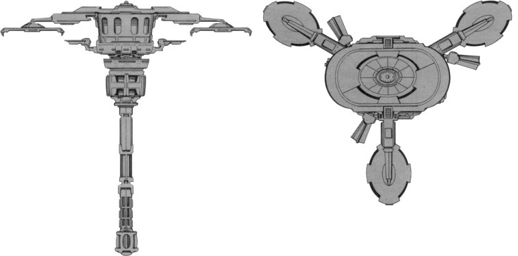

F-2 Nestar-type Starbase (RSE)

Battle Stats
Reactors and Superstructure
Total Power Units - 144 (Primary Quantum Reactor - 120, Impulse Engines - 24)
MPR - Can't move!
Superstructure - 45
Beam Weapons (Disruptors)
Max Power - 8
Firing Chart - U
Arcs - 3 per arc
Bonuses - +3(1-8) +2(9-16) +1(17-20)
Missile Weapons (Photon Torpedoes)
Power to Arm - 1
Damage - 10
Firing Chart - Q
Arcs - 3 per arc
Missile Weapons (Plasma Torpedoes)
Power to Arm - 8
Damage - See chart
Firing Chart - T
Arcs - 1 per arc
Deflector Shields
Max Shield Power - 17
SPR - 1/1
Plasma Torpedo Damage Chart
Range | Damage
1-4 | 28
5-8 | 24
9-11 | 20
12-13 | 16
14-15 | 12
13-14 | 8